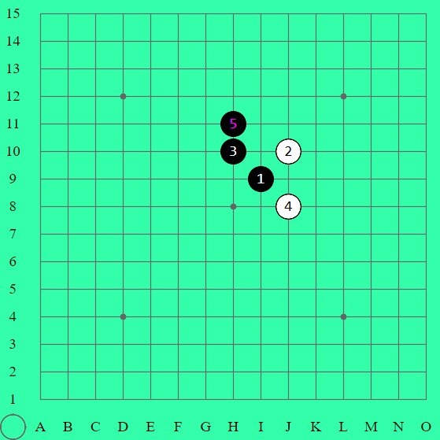

棋盤：五子棋棋盤為 15 路，共有 225 個交點可以落子。
座標：為方便記譜及討論，棋盤縱路由下至上用 1 ~ 15 標記，橫路從左至右用 A ~ O 標記。
天元：棋盤正中央的點，座標H8。
星位：座標D4、D12、L4、L12的點。
盤面：棋盤上棋子分佈的情況。
盤端：棋盤上下左右的四個邊界。
棋子：分黑子和白子兩種，行棋時棋子下在格線的交點上，正常會由黑子先下。
手順：行棋的順序，一般程式會把數字標示在棋子上

前一手：次一手可做出某種攻擊的手段。如將此子稱為四三前一手，表示若對方不理，下一手可以做出四三。
禁手：黑子禁止下出雙活三、雙四、長連三種棋型，不論主動被動下出，皆判黑敗。而白子無禁手，可自由落子，長連亦判勝。
嵌手：逼黑棋下出禁手手法，又稱逼禁，是白棋特有的攻擊方式。
詰棋：一種刻意安排的棋局，其含有一些巧妙的獲勝手法，以作為題目，可用來訓練及測試棋力。
複盤：對局結束以後重演對局的過程。一般用以研究、比較雙方的成敗得失和著法優劣。
打譜：按照棋譜演練著法，來學習譜中的技巧，是提高棋藝水平的重要方法之一。
定石：某個開局或某變化，經研究過後得出雙方較佳應對手段，進而成為固定的下法，可稱為定式或定石。定石可以記錄到一方必勝、一方優勢或均勢為止。它是棋局為經驗累積的成果、是一直研究、修正的棋局精華。
先手：掌握主動權，攻擊權，主導局勢的一方。
後手：被動的一方。
問應手：為決定之往後的行棋策略，用來試探對手的走法。
衝四勝（追四勝）：簡稱VCF或VC4，連續下出四，直到獲勝。
攻擊勝（追詰勝）：簡稱VCT或VC3，利用次一手有VC4的攻擊手法，一直攻到獲勝。
外勢、空間：通常指棋盤中間以外，尚未被黑白棋子佔領，並有足夠的範圍可以發展，進而連五的地方。
打點：某些開局規則在第五手時，黑子需下出數個點（即稱之為打點），供白方選擇其一做為第五手。
打數：打點的數量。
五手兩打：國際規則用語，表示第五手時，黑方必須下兩個打點讓白方選擇。
一打、二打：指國規或山口規時，第五手的打點，我們稱最好的點為一打，次好的為二打，依序三打四打等。